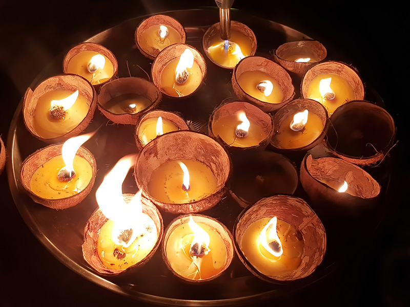
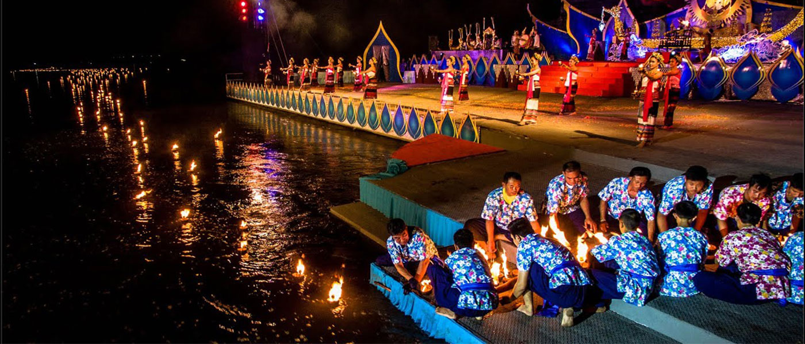
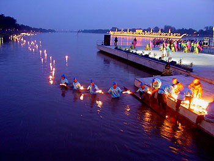

องค์ประกอบสำคัญของประเพณีลอยกระทงสาย

กะลามะพร้าว
ใช้กะลามะพร้าวแห้งเป็นวัสดุหลัก แทนกระทงแบบทั่วไป เป็นเอกลักษณ์เฉพาะของจังหวัดตาก

ไส้เทียนและน้ำมันมะพร้าว
เติมน้ำมันมะพร้าวเพื่อให้แสงไฟสว่าง และลอยต่อเนื่องได้อย่างสวยงาม

การลอยต่อเนื่องเป็นสาย
ปล่อยกระทงทีละใบให้ไฟเรียงต่อกัน เกิดเป็นสายแสงยาวบนแม่น้ำปิง

ความสามัคคีของชุมชน
แสดงถึงความร่วมมือของคนในชุมชน ซึ่งเป็นหัวใจสำคัญของประเพณีนี้